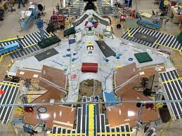
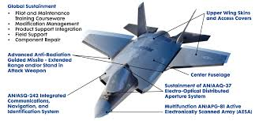

Aircraft 101: F-35
Intro
F-35 Development:
The F-35 was the product of the Joint Strike Fighter (JSF) program, which was the merger of various combat aircraft programs from the 1980s and 1990s. One progenitor program was the Defense Advanced Research Projects Agency (DARPA) Advanced Short Take-Off/Vertical Landing (ASTOVL) which ran from 1983 to 1994; ASTOVL aimed to develop a Harrier jump jet replacement for the U.S. Marine Corps (USMC) and the UK Royal Navy. Under one of ASTOVL's classified programs, the Supersonic STOVL Fighter (SSF), Lockheed Skunk Works conducted research for a stealthy supersonic STOVL fighter intended for both U.S. Air Force (USAF) and USMC; among key STOVL technologies explored was the shaft-driven lift fan (SDLF) system. Lockheed's concept was a single-engine canard delta aircraft weighing about 24,000 lb (11,000 kg) empty. ASTOVL was rechristened as the Common Affordable Lightweight Fighter (CALF) in 1993 and involved Lockheed, McDonnell Douglas, and Boeing.[16][17]
F-35 Specifications:
The Lockheed Martin F-35 Lightning II is an American family of single-seat, single-engine, supersonic stealth strike fighters. A multirole combat aircraft designed for both air superiority and strike missions, it also has electronic warfare and intelligence, surveillance, and reconnaissance capabilities. Lockheed Martin is the prime F-35 contractor with principal partners Northrop Grumman and BAE Systems. The aircraft has three main variants: the conventional takeoff and landing (CTOL) F-35A, the short take-off and vertical-landing (STOVL) F-35B, and the carrier-based (CV/CATOBAR) F-35C.